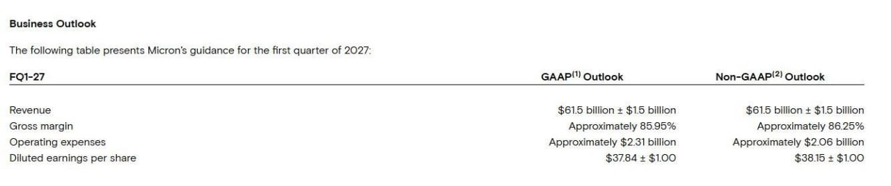

過去 26 小時只有一則實質內容：股癌整理美光（Micron, MU）FY26 Q4 財報與法說重點（#6455），以及同一分鐘貼出的 FQ1-27 財測截圖（#6456）。核心訊息是記憶體供給緊到 2028，而且管理層的說法與貼文整理大致吻合。
原文（#6455）
mu 26q4
agentic workflow 帶動 cpu、為求出貨順利主動壓低單機用量等市場想像和傳聞獲得驗證，持續缺到至少 2028
同時感覺對 physical AI 如自駕車的需求看好
- Q1 2027 guide 營收 615 億、毛利率 86.25%、EPS 38.15
- Q1 DRAM/NAND 位元 qoq 只有個位數成長，單位成本雙位數上升，是 FY27 毛利率低點
- 產業 DRAM 出貨 2027、2028 年都約低 20% 成長，NAND 約中 20%，兩年都供給受限，比 2026 更緊
- 伺服器出貨 2027 續增 high teens，agentic AI 帶出 CPU 新需求
- FY27 出貨 75% 以上已被客戶鎖定
- 2028 漲價幅度會放緩，市場吃緊會一直支撐到 2028
- FY27 capex 上調主要是建廠支出，蓋的是 2028 底以後才啟用的無塵室，無塵室是全產業共同限制，也就是說供給曲線靠這個畫得出來
- agentic workload 跑在 CPU 上，帶動 LPDDR、DDR、SSD，是伺服器出貨高十位數成長的主因
- 單機記憶體容量成長率略低於先前預期，因為客戶為了保出貨量，主動壓低每台記憶體用量
- HBM4E 的 base die 不像 HBM4 用自家製程，客製版與標準版都改在晶圓代工製程上共同設計
- L4 以上自駕車用 200GB 以上記憶體、數 TB 儲存，人形機器人需求類似，定位為十年末的增量需求
---
" 我們開始送樣業界首款 512GB 超高密度、大容量 DDR5 RDIMM 模組，傳輸速度最高可達 9,200 MT/s。
我們已完成多家客戶對採用 1-gamma 製程、速度達 8,800 MT/s 的高速伺服器 RDIMM 模組之資格認證。
我們在伺服器 LPDDR SOCAMM 的業界領先產品組合，於 2026 年第四季營收較前一季增加超過一倍。
我們的 7600 PCIe Gen 5 與 9650 PCIe Gen 6 高效能 SSD，已開始出貨給市場領先客戶，用於 KV-cache（鍵值快取）應用。
我們的 6600 ION SSD 在 2026 年第四季實現強勁的量產爬坡。
我們目前已開始出貨採用 1-gamma 製程的 6-channel LPDDR5X，供旗艦級行動裝置使用。
我們已在 AI 工作站產品上，取得所有 Tier 1 OEM 客戶的 design win（設計導入案）。
我們的 4600 SSD 已取得更多領先 PC OEM 客戶的資格認證。
我們開始向多個實體 AI（physical AI）市場客戶送樣採用 1-gamma 製程的 LPDDR6 產品。"
原文（#6456）：無文字，僅圖片。

圖為美光 Business Outlook 表：FQ1-27 營收 615 億美元 ± 15 億；毛利率 GAAP 約 85.95%、Non-GAAP 約 86.25%；營業費用 GAAP 約 23.1 億、Non-GAAP 約 20.6 億；稀釋後 EPS GAAP 37.84 ± 1 美元、Non-GAAP 38.15 ± 1 美元。貼文的 615 億、86.25%、38.15 是 Non-GAAP 數字，與圖一致。
講解
先看數字的量級：據公開報導，美光 FQ4 營收約 542 億美元（年增約 379%）、毛利率約 87%、Non-GAAP EPS 約 33.42 美元，下一季指引 615 億美元，已是記憶體超級週期的高峰區。貼文第一個重點是「為什麼 FQ1 毛利率是低點」：位元出貨 QoQ 只有個位數成長（供給本身就長不動），但單位成本雙位數上升，加上報導提到的獎金等費用，所以管理層把 86% 出頭視為 FY27 毛利率的底部。換句話說，價格還在漲，只是成本漲得更快一點，毛利率不會再往上衝。
第二個重點是供給為何「緊到 2028」。記憶體擴產的瓶頸是無塵室（fab 建築本體），建廠到設備進駐要一到兩年以上；貼文說 FY27 capex 上調主要花在 2028 年底以後才啟用的無塵室，意思是現在花的錢不會很快變成位元，全產業又都卡在同一件事，所以產業 DRAM 位元成長只有約低 20%、NAND 約中 20%，遠低於需求成長。FY27 出貨 75% 以上已被客戶鎖定（報導同樣引述「超過 75% 的 2027 產出已承諾」），代表價格與數量可見度高。但「2028 漲價幅度會放緩」要留意：供給吃緊不等於價格繼續大漲，股價定價的往往是斜率而非水位。
第三個是需求端的新故事：agentic AI。一般想像 AI 吃的是 GPU 加 HBM，但 agent 會大量呼叫工具、跑流程、檢索資料，這些工作多落在 CPU 與通用伺服器上，連帶拉動 DDR5、LPDDR（SOCAMM 是 LPDDR 做成可插拔模組給伺服器用）與 SSD；KV-cache 則是大型模型推論時把已算過的注意力結果暫存起來，近年開始外溢到高速 SSD。貼文列的 512GB RDIMM、PCIe Gen 6 SSD 就是這條線的產品。
貼文也點出一個矛盾訊號：客戶為了保住整機出貨量，主動壓低每台記憶體用量（de-spec），所以單機容量成長略低於預期。報導把這列為風險：若價格過高，客戶砍規格會讓內容量成長打折。這是「缺貨」的另一面，缺到客戶被迫少用，需求被價格壓抑，而不是需求消失。另外要分清楚：缺貨和 de-spec 並存時，短期對營收是好事，但若 2028 之後新產能一起開出，週期反轉的風險是真實存在的。貼文的說法偏樂觀，原始報導還有營業費用 FY27 增加約 25 億美元等保守項目。
HBM4E 的 base die 改走晶圓代工製程、客製與標準版都與代工廠共同設計，是 HBM 結構的變化：base die（堆疊最底層的邏輯晶片）過去記憶體廠可自家製程做，現在需要先進邏輯製程，這讓記憶體廠對代工廠的依賴上升，也讓客製化 HBM 更像 ASIC 合作。最後的 physical AI 部分（L4 以上自駕車 200GB 以上記憶體、數 TB 儲存，人形機器人類似）是管理層對本十年末的增量需求定位，量體目前尚小，屬長期敘事，不是 FY27 的業績來源。
關於股價反應，各來源說法不一：Yahoo 報導盤後下跌約 2.3%，Stocktitan 標題稱「股價持平」，XTB 則稱盤後上漲，貼文本身未提股價，無法確認，請以實際行情為準。
註：我只查到第二手整理的法說摘要與財測表，未能逐字核對貼文引號內的「我們開始送樣…」那段產品敘述，該段應是美光新聞稿原文的中譯。